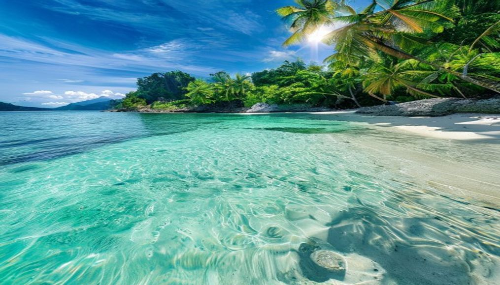
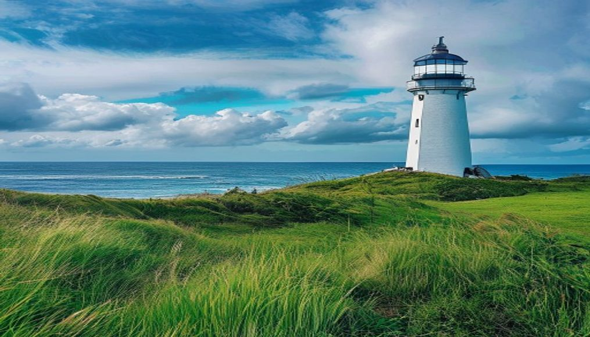
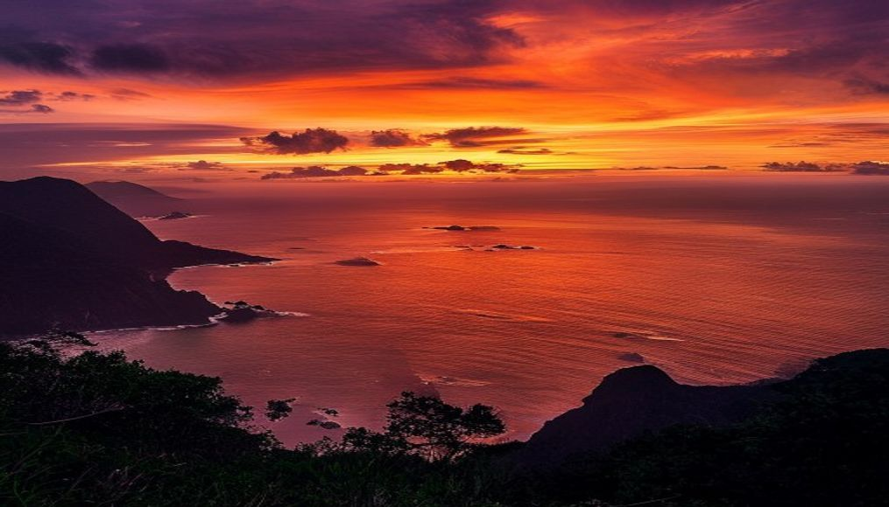

🏍️ 墾丁交通：機車環半島

🏮 小編真心話：墾丁大街的熱鬧程度超乎想像，整條街從傍晚6點開始就被人群淹沒。烤魷魚的香氣、QQ蛋奶的叫賣聲、還有各家招牌的霓虹燈，那種台灣夜市特有的熱情與活力，在墾丁這個小鎮被放大了十倍。
墾丁景點分散在恆春半島各處，機車是最自由的移動方式。從恆春鎮出發，環半島一圈約50公里。
- 租機車：恆春鎮上最多租車行，一天 NT$400-500（需機車駕照）
- 電動機車：無駕照可騎，租車行有提供，一天 NT$500-600
- 客運：墾丁快線從高鐵左營站直達，約2小時，NT$418
- 自駕：國道3號到南州交流道下，約4.5小時從台北
💡 省錢秘訣：9-10月是墾丁淡季，民宿砍價空間大，現場問通常比網路訂更便宜。平日海景雙人房 NT$1,200-1,800 就能住到。
🗓️ 3天2夜行程安排
Day 1
南灣戲水 → 墾丁大街夜市
- 中午抵達恆春，租機車後前往民宿放行李
- 下午 南灣 戲水（免門票），可租浮潛裝備 NT$300
- 南灣水上活動：香蕉船 NT$300、水上摩托車 NT$500
- 傍晚回民宿沖洗，前往 墾丁大街夜市
- 夜市必吃：烤魷魚、一顆痣蔥油餅、QQ蛋奶、打洞香腸

🏖️ 小編真心話：南灣的水透明到可以直接看到海底的珊瑚和熱帶魚，浮潛超值！建議下午三點前去，人少水清，租浮潛裝備不要在沙灘旁租，往巷子裡走比較便宜。
💡 建議：墾丁大街夜市每晚6點開始，7-8點人潮最多。想吃排隊名店建議6點前就到。
Day 2
鵝鑾鼻 → 龍磐公園 → 佳樂水 → 恆春古城
- 早上 鵝鑾鼻公園（門票 NT$60），全台最南端燈塔打卡
- 前往 龍磐公園（免門票），石灰岩地形配無敵海景
- 沿東岸騎到 佳樂水（門票 NT$60），海蝕地形奇岩怪石
- 下午回 恆春古城，逛老街吃綠豆蒜、洋蔥餅
- 晚上找一間海邊酒吧聽Live Band，吹海星喝啤酒

🗼 小編真心話：站在鵝鑾鼻燈塔前，看著左手邊是太平洋、右手邊是台灣海峽，那種被兩片海包圍的感覺太震撼了。記得帶防曬，那裡完全沒有遮蔽物。
Day 3
白沙灣 → 貓鼻頭 → 關山夕陽 → 回程
- 早上 白沙灣（免門票），《少年Pi》拍攝地，沙質細白
- 中午前往 貓鼻頭（門票 NT$30），看珊瑚礁海岸線
- 下午 關山 看日落（門票 NT$60），CNN評選世界最美夕陽之一
- 日落後回恆春鎮還車，搭客運回左營或開車北返

🌇 小編真心話：CNN說這是世界最美夕陽之一，我第一次看還覺得誇張——直到親眼看到金色夕陽慢慢沉入太平洋，天空從橘紅變成紫粉，我才懂。請提早一小時到，搶觀景台第一排。
💡 注意：關山夕陽大約5:30-6:30（依季節不同），建議提前30分鐘到卡位。秋冬落山風強，帶件外套。
💰 3天2夜預算參考
| 項目 | 預算 (NT$) |
|---|
| 交通（客運來回+租機車2天） | 1,200-1,800 |
| 住宿2晚 | 2,400-6,000 |
| 餐食3天 | 1,500-2,000 |
| 水上活動 | 500-1,500 |
| 門票 | 200-300 |
| 合計 | 5,800-11,600 |
🏨 墾丁住宿推薦區域
- 墾丁大街旁：逛夜市最方便，但晚上較吵，適合年輕人
- 南灣：走路到沙灘5分鐘，海景民宿多，適合愛玩水的人
- 恆春鎮：房價最便宜，有古城老街可逛，離夜市騎車10分鐘
- 白沙灣：安靜放鬆，適合想遠離人潮的情侶和家庭
💡 小編真心話：墾丁最美的不是夏天，而是春秋兩季！夏天太熱太曬，
冬天又太冷不能下水。3-5月或10-11月去墾丁，天氣舒適、遊客較少、住宿也比較便宜。
另外，墾丁大街的價格偏貴，建議到恆春老街吃更道地的小吃，價格只有一半！
❓ 常見問題
墾丁什麼季節去最好？
4-10月適合水上活動，7-8月暑假人最多、住宿最貴。9-10月秋天水溫仍暖、人少價格低，是CP值最高的時段。冬天風大不宜戲水，但適合看海散心。
墾丁要租機車嗎？
強烈建議租機車！墾丁景點分散，公車班次少。租機車一天 NT$400-500，可跑遍墾丁大街到鵝鑾鼻。需有機車駕照，無駕照可租電動機車。
墾丁3天2夜花多少錢？
約 NT$6,000-12,000（住宿2晚 NT$2,400-6,000、機車2天 NT$800-1,000、餐食 NT$1,500-2,000、水上活動 NT$800-1,500、門票 NT$300）。
墾丁夜市必吃什麼？
墾丁大街夜市（每晚6-12點）：烤魷魚、一顆痣蔥油餅、QQ蛋奶、迪迪小吃南洋料理、打洞香腸。建議6-7點去，晚10點後人潮最多。
墾丁水上活動有哪些？
浮潛 NT$300-500、水上摩托車 NT$500、香蕉船 NT$300、SUP立槳 NT$800-1,200、拖曳傘 NT$1,000-1,500。南灣和白沙灣都有店家，可現場比價。
📣
専銷猫家文環，限時免賟送
填Email競竹收到PDF下載職接后和最新旅费貼惑
🔒 履金隐私，随時可取消譠開
Klook.com